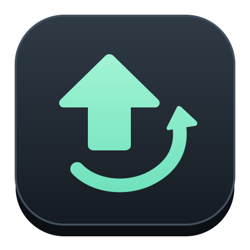

連點與長壓
為每個按鍵選擇連續點按或長壓，設定按壓時間與間隔。

AutoKey. 體驗示範你的啟動鍵，由你決定
少一點重複，多一點專注
把需要反覆操作的按鍵安排好。
保留控制權，也讓雙手喘口氣。
為每個按鍵選擇連續點按或長壓，設定按壓時間與間隔。
把同一情境的按鍵放在一起，為每個群組指定自己的啟動鍵。
需要時只執行一次，也能讓群組持續循環，再用快捷鍵停止。
桌面程式預設依 Windows 顯示語言開啟，沒有相符語系時使用英文。
先在這裡，感受節奏
每個情境，都有適合的設定。
選一個，看看按鍵如何運作。
互動示意只在這個網頁內運作，不會控制你的應用程式。
閱讀 · 檢視 · 重複操作
在接受 PageDown 的閱讀或檢視工具裡，按設定節奏翻閱內容。你專注於內容，AutoKey 負責重複的那一下。
尚未開始 · 網頁示意
僅限允許自動化的環境
在允許自動化且接受按鍵訊息的遊戲中，將重複互動整理為按鍵規則。像是長壓互動鍵，再留一秒休息。
遊戲規則與輸入方式各不相同，請先確認可用範圍。此處不代表特定遊戲已通過相容性測試。
長壓互動
尚未開始 · 網頁示意
複雜連招尚未支援
格鬥指令通常需要方向、順序與精確時機。把複雜操作拆成幾個步驟，可以更清楚地理解每次輸入。
現版 AutoKey 適合連點、長壓與群組控制。群組內的按鍵同時起算，並非依序執行的連招編輯器。
了解現版的按鍵功能方向輸入 按鍵輸入
這是指令拆解示意。現版群組內按鍵同時起算，尚未支援依序輸出連招，也不保證組合鍵效果。
讓預期，和實際一樣清楚
AutoKey 可向指定視窗傳送按鍵訊息。目標願不願意接收，由它本身的設計決定。
可用於接受按鍵訊息的前景視窗。實際相容性依程式而定；部分遊戲或程式使用不同輸入方式，即使保持前景，也可能不接受。
只有本身允許在背景接收並處理按鍵訊息的程式，才會在你操作其他視窗時繼續回應。AutoKey 不會把焦點搶回來，也不需因切回視窗反覆重新啟動。
「執行中」代表正在傳送指令，不代表目標程式已採納。建議先以簡單按鍵確認反應，再設定群組。
你的下一組按鍵
指定要接收按鍵的應用程式，先確認它能回應。
加入按鍵，選擇連點或長壓，再調整時間與間隔。
設定每組快捷鍵，選擇執行一次，或開始持續循環。
使用之前，先了解
功能、相容性，
還有接下來的計畫。
可以，前提是目標程式接受背景按鍵訊息。AutoKey 不會切換你的操作焦點；切回目標視窗也不需要反覆按快捷鍵重新啟動。鎖定、休眠或目標關閉時的停止規則，請依桌面程式說明操作。
傳送訊息不代表目標已採納。程式的輸入方式、背景接收設計或權限都可能影響結果。請先用簡單按鍵實際測試；保持前景或提高權限，也無法保證所有程式都相容。
目前支援把連點與長壓按鍵整理成群組，群組內按鍵同時起算。尚未支援依序輸出的指令序列與精確連招，也不保證多鍵組合效果。格鬥情境是靜態拆解示意，並非現有連招功能。
桌面程式支援 Steam 平台清單的 31 種語系。語言選項設為「預設」時，依 Windows 顯示語言開啟，找不到相符語系則使用英文；也能自行切換。官方網站目前提供繁體中文。
Steam 版本準備中，尚未正式上架。商店頁面與正式下載資訊將另行公告；目前可以先在這個頁面體驗操作示意，了解工具的能力與使用限制。
桌面程式會在本機保存按鍵群組與語言偏好。Steam Cloud 同步流程正在準備，尚待 Steam 後台啟用與雙機驗收；目前不宣稱已提供跨電腦雲端同步。
把時間，留給真正想做的事